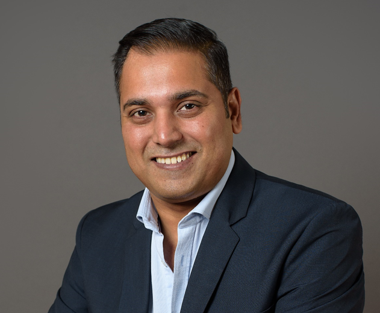

Technical Project Manager
& Scrum Master
Also working as Agile Coach and Delivery Lead.
I deliver complex cloud, infrastructure and platform programs in regulated environments, on time, audit-ready, and at scale. Most recently at ASML, I helped scale an Agile Release Train from 5 to 14 engineering teams.
Applying for a Scrum Master role? Take the Scrum Master CV instead.

Sustained across every planning increment. SAFe treats 80–100% as the healthy predictability range.
One delivery leader, two disciplines
I own scope, budget & schedule
- Programs up to ZAR 50m (≈ €2.5m) across banking, healthcare and high-tech
- Multi-vendor coordination: Microsoft, AWS, Oracle, Dimension Data, BCX
- Formal change control, risk registers and steering-committee reporting
- Cloud & infrastructure delivery: Azure, AWS, data centers, migrations
- Security & compliance built in: IAM, encryption, audit traceability
I make teams predictable
- Scaled an Agile Release Train from 5 to 14 teams at ASML
- SAFe PI Planning preparation and execution across value streams
- Coached 2 highly technical squads directly (10 people each, incl. POs)
- Dependency visualization that exposes blockers before they bite
- Mentored Scrum Masters and team leads on scaling and governance
Career timeline
Independent · Available for new assignments
Open to Technical Project Manager, Delivery Lead and Scrum Master roles across the Netherlands, full-time, contract or freelance. Since ASML I have been deepening the applied AI practice below, building and running autonomous agents and local LLM workflows, and putting those tools to work on delivery reporting and documentation.
Delivery Lead / Agile Coach
Coordinated delivery across an Agile Release Train that scaled from 5 to 14 engineering teams, sustaining an 80% completion rate against committed objectives. Led PI Planning across the train, served as delivery lead for 2 highly technical squads, and aligned stakeholders across Security, Risk and Compliance.
Scrum Master
Facilitated SAFe ceremonies and PI Planning at scale for distributed teams in a regulated healthcare environment, bridging engineering and business stakeholders and tracking cross-team risks to resolution.
Agile Coach
Implemented and scaled Scrum and Lean-Agile practices, coached leadership on Agile delivery models, and led transformation initiatives across tools, frameworks and delivery practices.
Technical Project Manager & Scrum Master
Owned end-to-end delivery of cloud and infrastructure programs with budgets from ZAR 3m to 50m (≈ €150k–€2.5m), coordinating Microsoft, AWS, Oracle, Dimension Data and BCX against shared timelines, with full security governance and audit traceability.
Earlier career
Delivery that holds up to scrutiny
Agile Release Train Launch & Scale-Up
Launched a multi-team delivery program from the ground up and helped scale it from 5 to 14 teams, structuring cross-functional teams, establishing governance, and partnering with RTEs and Product Management. Launched on time.
Ran PI Planning end-to-end across the train and led two of the technical squads directly (10 people each, including Product Owners). Built a dependency map that surfaced cross-team blockers before they hit a sprint boundary, and kept Security, Risk and Compliance stakeholders looped into every planning increment rather than brought in at the end.
Azure & AWS Data Centre Build
Led a large-scale cloud migration and infrastructure build across four environments, coordinating Microsoft, AWS and internal teams through phased milestones with full security and compliance signoff.
Grew the delivery team from 10 to 20 people over the 12-month build while holding the original timeline and budget. Coordinated Microsoft, AWS and internal infrastructure teams through four phased environments, with every milestone signed off by Information Security before the next phase started.
Azure Data Archiving Migration
Coordinated the secure migration of 400TB+ of on-premises data to Azure across four vendor workstreams. Encryption, transfer protocols and storage configurations were validated with Information Security before go-live.
Four vendor workstreams ran in parallel — network, storage, security and application — each validated against encryption and transfer-protocol requirements before a single terabyte moved. The €150k in savings came from decommissioning the on-premises archive footprint once migration was confirmed and signed off.
AIX Rightsizing & Cost Optimization
Managed the end-of-life upgrade and optimization of 300+ AIX server environments as a phased program. Every change went through security impact assessment and formal change control. Application owners reported measurably faster response times.
Every one of the 300+ servers went through a formal security impact assessment before its change window, and the program ran without an unplanned outage. Application owners flagged measurably faster response times once end-of-life hardware was retired, which became the case for extending the same approach elsewhere in the estate.
AI literacy I've actually lived
Outside of delivery work, I'm self-taught in applied AI, and I use it daily rather than just talking about it.
Certifications & qualifications
Let's talk delivery
Based in Utrecht and available immediately for Technical Project Manager, Delivery Lead, and Scrum Master roles across the Netherlands, full-time, contract, or freelance. English-speaking teams welcome. Dutch in progress (A2).